Node information
Test timing information
Up ramp statistics
Runtime session statistics
Down ramp statistics
Overall statistics
CPU usage graphs
Processes usage graphs
Memory usage graph
Disk usage graphs
Network usage graphs
| Test start | 2014-11-19 10:17:31 |
| Up ramp start | 2014-11-19 10:17:35 |
| Runtime session start | 2014-11-19 10:17:50 |
| Down ramp start | 2014-11-19 10:19:20 |
| Test end | 2014-11-19 10:20:10 |
| Up ramp length | 15 seconds 1 millisecond (requested 15000 ms) |
| Runtime session length | 1 minute 30 seconds 0 millisecond (requested 90000 ms) |
| Down ramp length | 15 seconds 1 millisecond (requested 15000 ms) |
| Total test length | 2 minutes 39 seconds 57 milliseconds |
| State name | % of total | Count | Errors | Minimum Time | Maximum Time | Average Time |
|---|---|---|---|---|---|---|
StoriesOfTheDay | 30 % | 1370 | 0 | 5 ms | 272 ms | 31 ms
|
Register | 1 % | 50 | 0 | 1 ms | 143 ms | 5 ms
|
RegisterUser | 0 % | 33 | 0 | 29 ms | 158 ms | 32 ms
|
Browse | 4 % | 220 | 0 | 1 ms | 145 ms | 4 ms
|
BrowseCategories | 1 % | 57 | 0 | 4 ms | 18 ms | 3 ms
|
BrowseStoriesInCategory | 0 % | 42 | 0 | 21 ms | 35 ms | 16 ms
|
OlderStories | 2 % | 103 | 0 | 3 ms | 118 ms | 5 ms
|
ViewStory | 20 % | 896 | 0 | 3 ms | 216 ms | 8 ms
|
PostComment | 4 % | 200 | 0 | 2 ms | 35 ms | 2 ms
|
StoreComment | 2 % | 133 | 0 | 26 ms | 214 ms | 34 ms
|
ViewComment | 8 % | 374 | 0 | 4 ms | 36 ms | 6 ms
|
ModerateComment | 0 % | 21 | 0 | 4 ms | 13 ms | 4 ms
|
StoreModerateLog | 0 % | 7 | 0 | 50 ms | 267 ms | 76 ms
|
SubmitStory | 2 % | 107 | 0 | 3 ms | 172 ms | 4 ms
|
StoreStory | 1 % | 65 | 0 | 19 ms | 172 ms | 41 ms
|
Search | 4 % | 179 | 0 | 1 ms | 144 ms | 3 ms
|
SearchInStories | 1 % | 67 | 0 | 4 ms | 21 ms | 4 ms
|
SearchInComments | 1 % | 57 | 0 | 5 ms | 253 ms | 17 ms
|
SearchInUsers | 0 % | 16 | 0 | 6 ms | 25 ms | 7 ms
|
Author (login) | 0 % | 22 | 0 | 1 ms | 6 ms | 1 ms
|
Author (task) | 0 % | 18 | 0 | 4 ms | 11 ms | 2 ms
|
ReviewStories | 0 % | 9 | 0 | 12 ms | 12 ms | 1 ms
|
AcceptStory | 0 % | 1 | 0 | 144 ms | 144 ms | 144 ms
|
RejectStory | 0 % | 0 | 0 | 0 ms | 0 ms | 0 ms
|
Back probability | 3 % | 169 | 0 | 0 ms | 0 ms | 0 ms
|
End of Session | 5 % | 248 | 0 | 0 ms | 0 ms | 0 ms
|
Total | 100 % | 4464 | 0 | - | - | 15 ms
|
Average throughput | 297 req/s
| |||||
Completed sessions | 180
| |||||
Total time | 1261 seconds
| |||||
Average session time | 7 seconds
| |||||
| State name | % of total | Count | Errors | Minimum Time | Maximum Time | Average Time |
|---|---|---|---|---|---|---|
StoriesOfTheDay | 17 % | 2440 | 0 | 5 ms | 390 ms | 11 ms
|
Register | 1 % | 165 | 0 | 1 ms | 367 ms | 5 ms
|
RegisterUser | 1 % | 160 | 0 | 20 ms | 250 ms | 53 ms
|
Browse | 5 % | 724 | 0 | 1 ms | 142 ms | 2 ms
|
BrowseCategories | 2 % | 283 | 0 | 3 ms | 348 ms | 7 ms
|
BrowseStoriesInCategory | 3 % | 465 | 0 | 5 ms | 242 ms | 25 ms
|
OlderStories | 3 % | 486 | 0 | 3 ms | 246 ms | 8 ms
|
ViewStory | 16 % | 2346 | 0 | 3 ms | 417 ms | 16 ms
|
PostComment | 6 % | 862 | 0 | 1 ms | 296 ms | 4 ms
|
StoreComment | 5 % | 843 | 0 | 21 ms | 492 ms | 84 ms
|
ViewComment | 10 % | 1420 | 0 | 5 ms | 465 ms | 22 ms
|
ModerateComment | 0 % | 74 | 0 | 4 ms | 45 ms | 7 ms
|
StoreModerateLog | 0 % | 59 | 0 | 27 ms | 293 ms | 86 ms
|
SubmitStory | 2 % | 402 | 0 | 2 ms | 260 ms | 6 ms
|
StoreStory | 2 % | 338 | 0 | 18 ms | 315 ms | 51 ms
|
Search | 3 % | 515 | 0 | 1 ms | 35 ms | 2 ms
|
SearchInStories | 3 % | 437 | 0 | 3 ms | 377 ms | 10 ms
|
SearchInComments | 1 % | 222 | 0 | 4 ms | 441 ms | 26 ms
|
SearchInUsers | 0 % | 75 | 0 | 4 ms | 136 ms | 15 ms
|
Author (login) | 0 % | 62 | 0 | 1 ms | 8 ms | 2 ms
|
Author (task) | 0 % | 60 | 0 | 3 ms | 220 ms | 8 ms
|
ReviewStories | 0 % | 67 | 0 | 7 ms | 63 ms | 18 ms
|
AcceptStory | 0 % | 41 | 5 | 3 ms | 184 ms | 77 ms
|
RejectStory | 0 % | 19 | 0 | 18 ms | 146 ms | 54 ms
|
Back probability | 4 % | 654 | 0 | 0 ms | 0 ms | 0 ms
|
End of Session | 6 % | 911 | 0 | 0 ms | 0 ms | 0 ms
|
Total | 100 % | 14130 | 5 | - | - | 17 ms
|
Average throughput | 157 req/s
| |||||
Completed sessions | 898
| |||||
Total time | 39032 seconds
| |||||
Average session time | 43 seconds
| |||||
| State name | % of total | Count | Errors | Minimum Time | Maximum Time | Average Time |
|---|---|---|---|---|---|---|
StoriesOfTheDay | 17 % | 416 | 0 | 8 ms | 34 ms | 10 ms
|
Register | 1 % | 29 | 0 | 1 ms | 12 ms | 2 ms
|
RegisterUser | 1 % | 27 | 0 | 23 ms | 180 ms | 69 ms
|
Browse | 5 % | 140 | 0 | 1 ms | 21 ms | 2 ms
|
BrowseCategories | 2 % | 60 | 0 | 4 ms | 14 ms | 5 ms
|
BrowseStoriesInCategory | 4 % | 100 | 0 | 9 ms | 184 ms | 29 ms
|
OlderStories | 3 % | 76 | 0 | 3 ms | 22 ms | 6 ms
|
ViewStory | 15 % | 365 | 0 | 4 ms | 214 ms | 15 ms
|
PostComment | 5 % | 131 | 0 | 1 ms | 25 ms | 3 ms
|
StoreComment | 5 % | 126 | 0 | 19 ms | 287 ms | 84 ms
|
ViewComment | 10 % | 249 | 0 | 5 ms | 323 ms | 21 ms
|
ModerateComment | 0 % | 14 | 0 | 4 ms | 34 ms | 6 ms
|
StoreModerateLog | 0 % | 12 | 0 | 23 ms | 483 ms | 197 ms
|
SubmitStory | 3 % | 75 | 0 | 2 ms | 13 ms | 4 ms
|
StoreStory | 2 % | 63 | 0 | 20 ms | 350 ms | 57 ms
|
Search | 3 % | 84 | 0 | 1 ms | 12 ms | 2 ms
|
SearchInStories | 2 % | 68 | 0 | 4 ms | 28 ms | 9 ms
|
SearchInComments | 1 % | 28 | 0 | 5 ms | 539 ms | 40 ms
|
SearchInUsers | 0 % | 10 | 0 | 5 ms | 233 ms | 62 ms
|
Author (login) | 0 % | 10 | 0 | 1 ms | 25 ms | 4 ms
|
Author (task) | 0 % | 10 | 0 | 3 ms | 4 ms | 2 ms
|
ReviewStories | 0 % | 6 | 0 | 6 ms | 31 ms | 34 ms
|
AcceptStory | 0 % | 5 | 0 | 59 ms | 216 ms | 180 ms
|
RejectStory | 0 % | 5 | 0 | 27 ms | 111 ms | 67 ms
|
Back probability | 5 % | 124 | 0 | 0 ms | 0 ms | 0 ms
|
End of Session | 6 % | 166 | 0 | 0 ms | 0 ms | 0 ms
|
Total | 100 % | 2399 | 0 | - | - | 17 ms
|
Average throughput | 159 req/s
| |||||
Completed sessions | 168
| |||||
Total time | 9869 seconds
| |||||
Average session time | 58 seconds
| |||||
| State name | % of total | Count | Errors | Minimum Time | Maximum Time | Average Time |
|---|---|---|---|---|---|---|
StoriesOfTheDay | 20 % | 4226 | 0 | 5 ms | 390 ms | 17 ms
|
Register | 1 % | 244 | 0 | 1 ms | 367 ms | 4 ms
|
RegisterUser | 1 % | 220 | 0 | 20 ms | 250 ms | 52 ms
|
Browse | 5 % | 1084 | 0 | 1 ms | 145 ms | 2 ms
|
BrowseCategories | 1 % | 400 | 0 | 3 ms | 348 ms | 6 ms
|
BrowseStoriesInCategory | 2 % | 607 | 0 | 5 ms | 242 ms | 25 ms
|
OlderStories | 3 % | 665 | 0 | 3 ms | 246 ms | 8 ms
|
ViewStory | 17 % | 3607 | 0 | 3 ms | 417 ms | 14 ms
|
PostComment | 5 % | 1193 | 0 | 1 ms | 296 ms | 3 ms
|
StoreComment | 5 % | 1102 | 0 | 19 ms | 492 ms | 78 ms
|
ViewComment | 9 % | 2043 | 0 | 4 ms | 465 ms | 19 ms
|
ModerateComment | 0 % | 109 | 0 | 4 ms | 45 ms | 7 ms
|
StoreModerateLog | 0 % | 78 | 0 | 23 ms | 483 ms | 102 ms
|
SubmitStory | 2 % | 584 | 0 | 2 ms | 260 ms | 5 ms
|
StoreStory | 2 % | 466 | 0 | 18 ms | 350 ms | 50 ms
|
Search | 3 % | 778 | 0 | 1 ms | 144 ms | 2 ms
|
SearchInStories | 2 % | 572 | 0 | 3 ms | 377 ms | 9 ms
|
SearchInComments | 1 % | 307 | 0 | 4 ms | 539 ms | 25 ms
|
SearchInUsers | 0 % | 101 | 0 | 4 ms | 233 ms | 19 ms
|
Author (login) | 0 % | 94 | 0 | 1 ms | 25 ms | 2 ms
|
Author (task) | 0 % | 88 | 0 | 3 ms | 220 ms | 6 ms
|
ReviewStories | 0 % | 82 | 0 | 6 ms | 63 ms | 17 ms
|
AcceptStory | 0 % | 47 | 5 | 3 ms | 216 ms | 91 ms
|
RejectStory | 0 % | 24 | 0 | 18 ms | 146 ms | 57 ms
|
Back probability | 4 % | 947 | 0 | 0 ms | 0 ms | 0 ms
|
End of Session | 6 % | 1325 | 0 | 0 ms | 0 ms | 0 ms
|
Total | 100 % | 20993 | 5 | - | - | 17 ms
|
Average throughput | 174 req/s
| |||||
Completed sessions | 1324
| |||||
Total time | 55757 seconds
| |||||
Average session time | 42 seconds
| |||||
test#####0
test#####0.2
test#####0.5
test#####1
test#####2
test#####3
Command is: /usr/bin/rsh -x localhost /bin/bash -c 'LANG=en_GB.UTF-8 /usr/local/bin/sar -n DEV -n SOCK -rubcw 1 125 -f /home/ubuntu/RUBBoS/bench/2014-11-19@10:17:31/web_server.bin > /home/ubuntu/RUBBoS/bench/2014-11-19@10:17:31/web_server'
Command is: /usr/bin/rsh -x localhost /bin/bash -c 'LANG=en_GB.UTF-8 /usr/local/bin/sar -n DEV -n SOCK -rubcw 1 125 -f /home/ubuntu/RUBBoS/bench/2014-11-19@10:17:31/db_server.bin > /home/ubuntu/RUBBoS/bench/2014-11-19@10:17:31/db_server'
Command is: /usr/bin/rsh -x localhost /bin/bash -c 'LANG=en_GB.UTF-8 /usr/local/bin/sar -n DEV -n SOCK -rubcw 1 125 -f /home/ubuntu/RUBBoS/bench/2014-11-19@10:17:31/client0.bin > /home/ubuntu/RUBBoS/bench/2014-11-19@10:17:31/client0'
hantest
/home/ubuntu/RUBBoS/bench/2014-11-19@10:17:31/
gif
1
Generating data files ... '/home/ubuntu/RUBBoS/bench/2014-11-19@10:17:31/db_server' done.
Generating data files ... '/home/ubuntu/RUBBoS/bench/2014-11-19@10:17:31/web_server' done.
Generating data files ... '/home/ubuntu/RUBBoS/bench/2014-11-19@10:17:31/client0' done.
Generating servers CPU idle time graph
Generating servers CPU busy time graph
Generating servers CPU user/system time graph
Generating servers Processes/second graph
Generating servers Context switches/second graph
Generating servers Disk total transfers graph
Generating servers disk read/write requests graph
Generating servers disk blocks read/write requests graph
Generating servers Memory usage graph
Generating servers Memory & cache usage graph
Generating servers network received/transmitted packets graph
Generating servers network received/transmitted bytes graph
Generating servers Sockets usage graph
Generating clients CPU idle time graph
Generating clients CPU busy time graph
Generating clients CPU user/system time graph
Generating clients Processes/second graph
Generating clients Context switches/second graph
Generating clients Disk total transfers graph
Generating clients disk read/write requests graph
Generating clients disk blocks read/write requests graph
Generating clients Memory usage graph
Generating clients Memory & cache usage graph
Generating clients network received/transmitted packets graph
Generating clients network received/transmitted bytes graph
Generating clients Sockets usage graph
Erasing temporary files ...
| 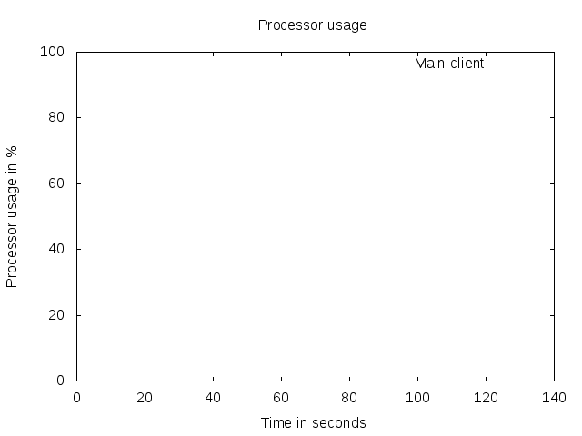 |
| 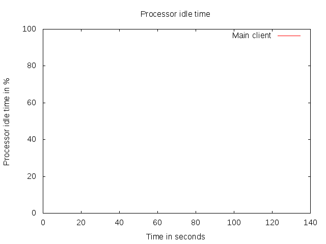 |
| 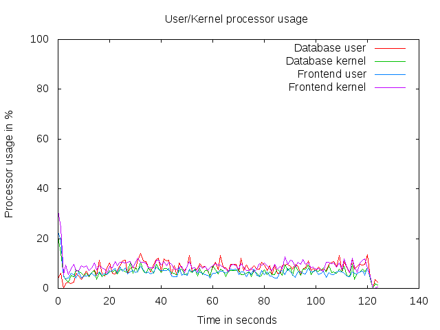 | 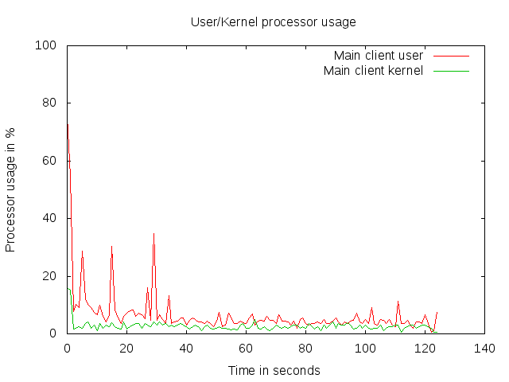 |
| 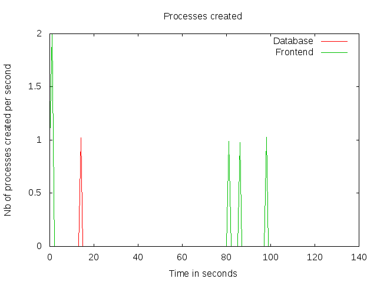 | 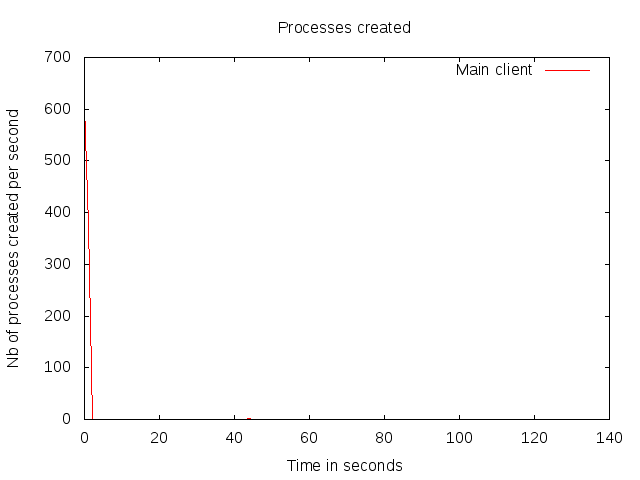 |
| 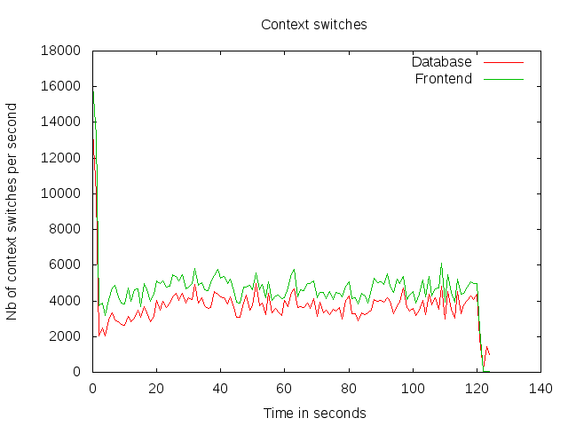 | 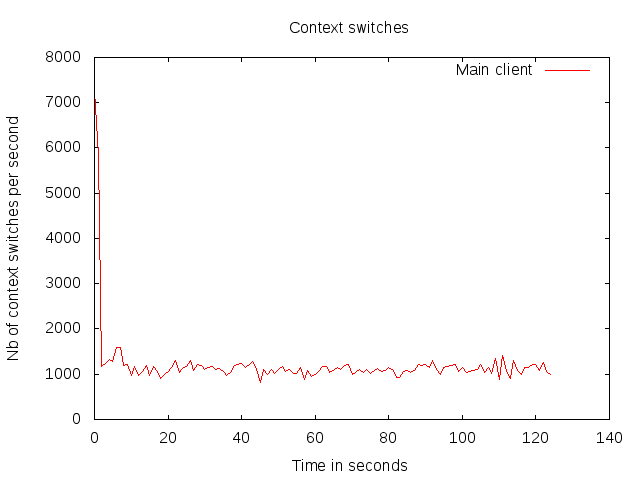 |
| 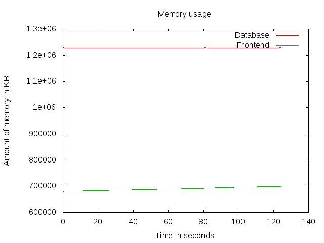 | 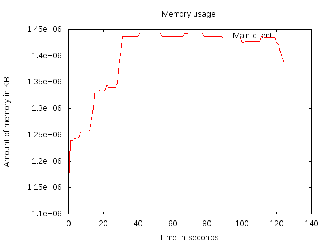 |
| 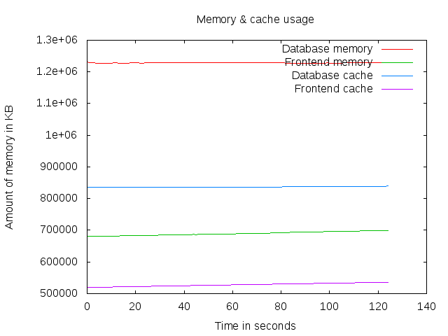 | 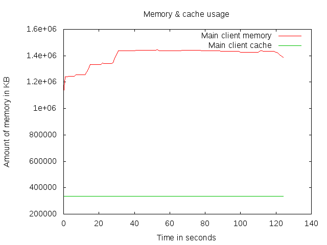 |
| 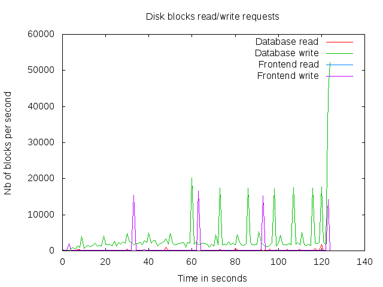 | 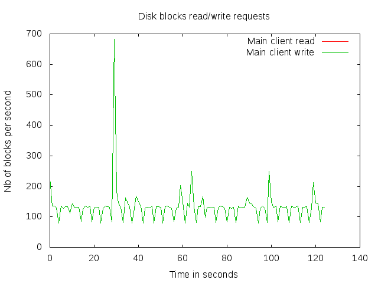 |
 | 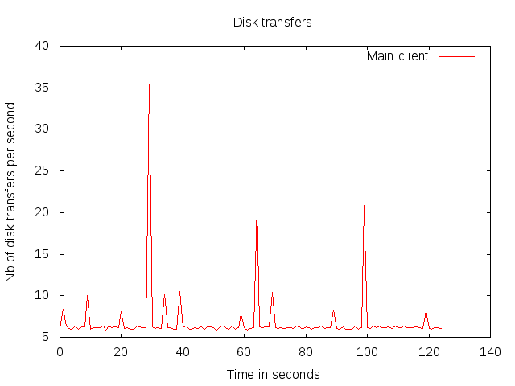 |
| 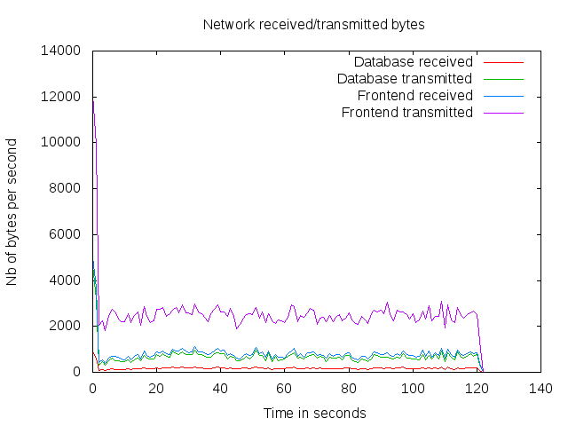 | 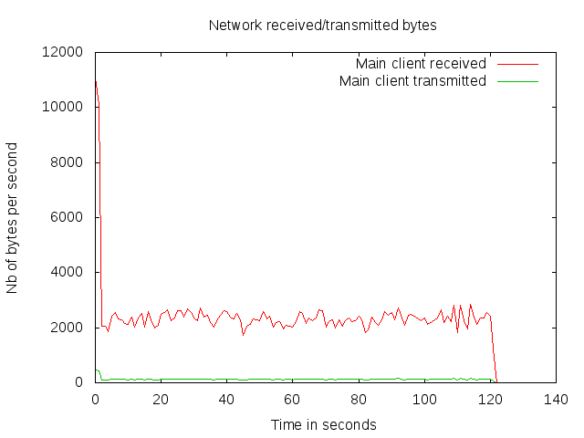 |
| 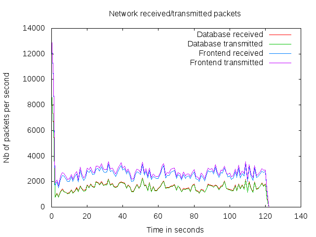 | 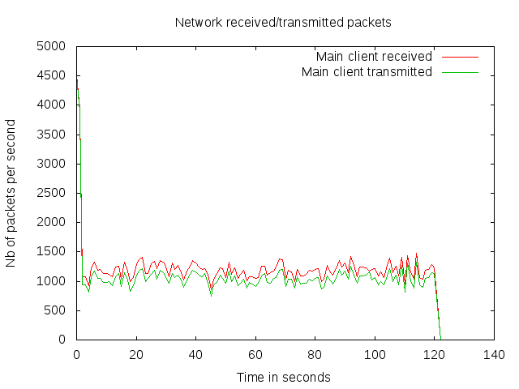 |
| 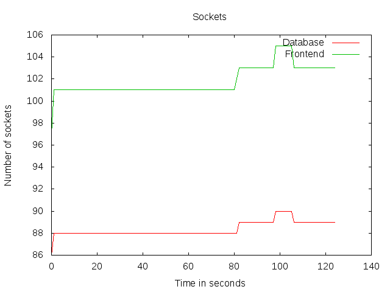 | 
|
Computing global stats for 1 scripts in /home/ubuntu/RUBBoS/bench/2014-11-19@10:17:31/ ... Done.